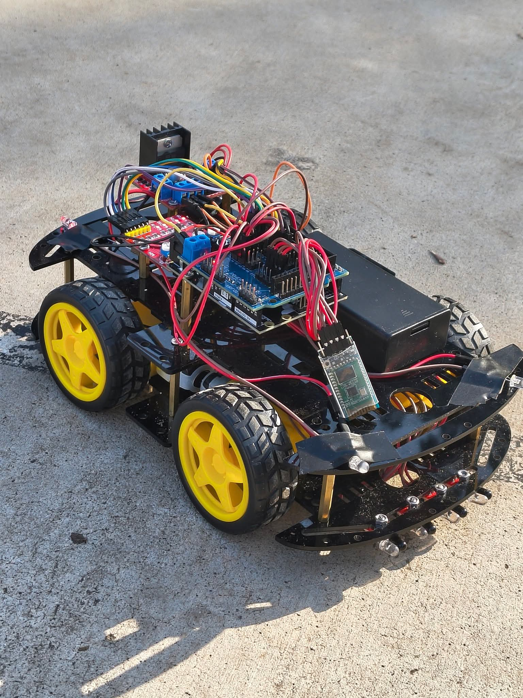
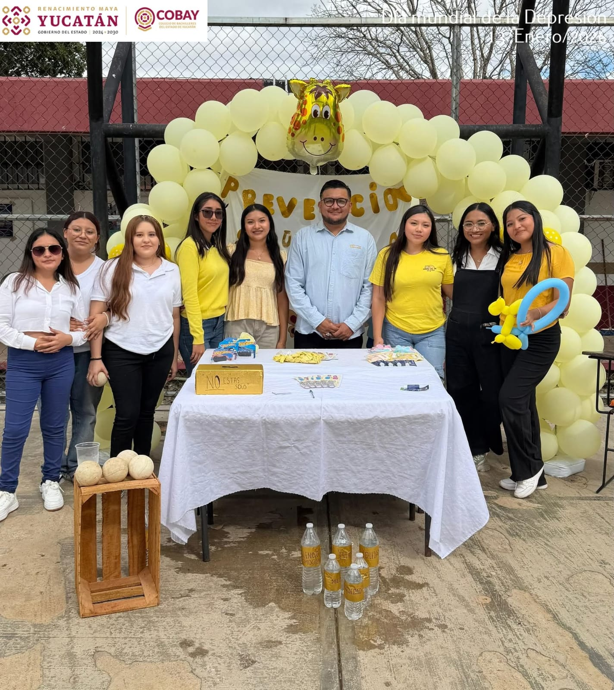
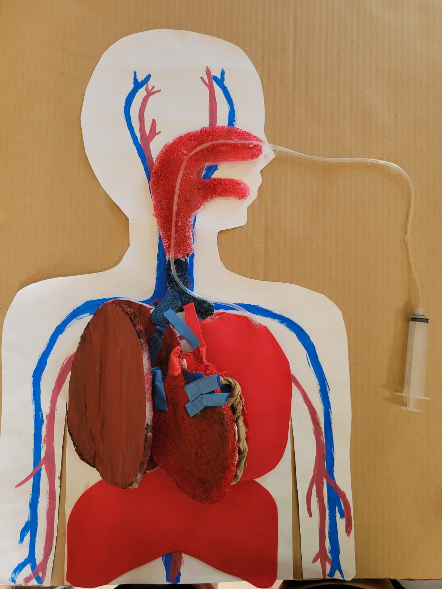
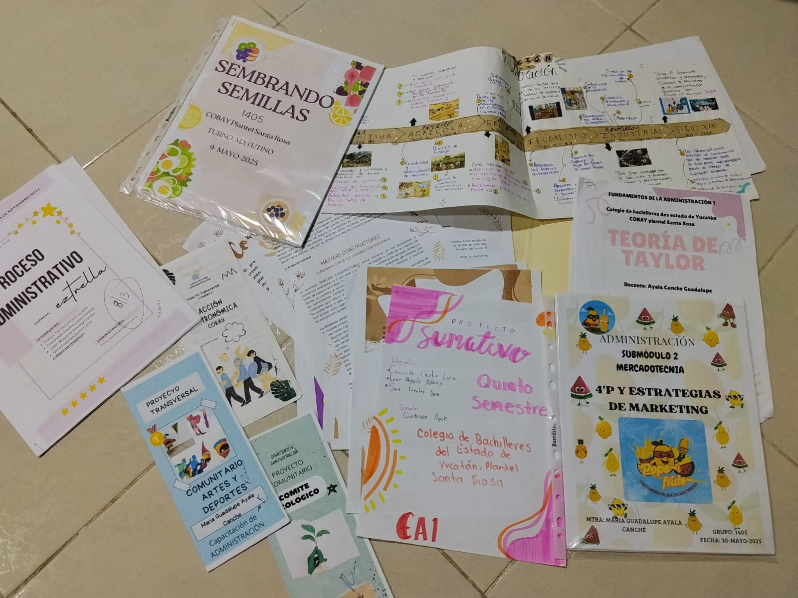

CAPACITACIONES
TIC'S¿Qué aprenderás? Desarrollo de software, creación y diseño de páginas web, manejo avanzado de bases de datos y soporte técnico. Perfil de egreso: Estarás capacitado para proponer soluciones tecnológicas, gestionar sistemas de información y utilizar software de productividad de alto nivel. Ideal para: Quienes desean estudiar Ingeniería en Sistemas, Programación o Diseño Digital.  |
|
DOCENCIA¿Qué aprenderás? Herramientas conceptuales para la práctica docente, planeación de procesos de enseñanza-aprendizaje y diseño de cursos de capacitación comunitaria. Perfil de egreso: Serás capaz de diseñar planes de clase, utilizar medios de enseñanza creativos y ejecutar procesos de capacitación presencial con enfoque en valores. Ideal para: Estudiantes con vocación para la Educación, Pedagogía, Educación Especial o Trabajo Social.  |
|
HIGIENE Y SALUD¿Qué aprenderás? Anatomía y fisiología humana, principios de epidemiología, primeros auxilios y técnicas para el diagnóstico de salud comunitaria. Perfil de egreso: Podrás colaborar en la prevención de enfermedades, promover hábitos de vida saludables y asistir en la atención primaria de salud en tu comunidad. Ideal para: Estudiantes interesados en Medicina, Enfermería, Nutrición o Psicología.  |
|
ADMINISTRACION¿Qué aprenderás? Fundamentos de contabilidad, administración financiera, mercadotecnia y procesos administrativos para micro y pequeñas empresas. Perfil de egreso: Tendrás la capacidad de organizar, dirigir y controlar procesos en empresas, además de contar con bases sólidas para emprender un negocio propio. Ideal para: Quienes buscan estudiar Contaduría, Administración de Empresas, Negocios Internacionales o Economía.  |